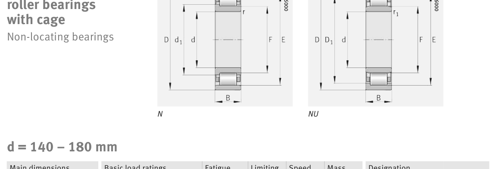

Original catalogue drawing - FAG Schaeffler HR 1, page 444

Scanned from the manufacturer catalogue page listing this part number. All part numbers printed on that table share the same drawing.
Scale cross-section
Blue = inner / outer ring, yellow = rolling element. Drawn to scale from this part's own
dimensions for selection reference only - not a manufacturing or assembly drawing.
Dimension table (mm / inch)
Symbol
Dimension
mm
inch
d
Bore diameter
180
7.0866
D
Outside diameter
380
14.9606
B
Inner-ring / bearing width
75
2.9528
r
Chamfer (min)
4
0.1575
E
Roller-set outside dia.
335
13.189
F
Roller-set bore dia.
231
9.0945
Notes
Weights are given in kg. Load ratings are shown in both the original catalogue units and the converted value (1 N = 0.2248 lbf). Data is provided for selection reference only - confirm against the latest official catalogue before ordering.
Main dimensions
Bore d (mm)
180
Outside dia. D (mm)
380
Width B (mm)
75
Inner-ring shoulder dia. D1 (mm)
314.2
Dimension E (mm)
335
Dimension F (mm)
231
Dimension s (mm)
6.1
Load ratings & speeds
Basic dynamic load rating Cr (lbs)
233801
Basic static load rating Cor (lbs)
296748
Basic dynamic load rating Cr (N)
1.04e+06
Basic static load rating C0r (N)
1.32e+06
Fatigue limit load Cur (N)
100000
Limiting speed nG (rpm)
2,650
Reference speed nB (rpm)
1,500
Weight
Weight (kg)
43.9
Mounting dimensions (fillets / shoulders)
Housing fillet r max (mm)
4
Chamfer r1 min (mm)
4
Shaft shoulder da (mm)
197
Shaft shoulder db (mm)
234
Housing shoulder Da (mm)
363
Housing fillet ra max (mm)
3
Housing fillet ra1 max (mm)
3
Bearing life (ISO 281 basic rating life)
C / P
Equivalent load P (N)
L10 (106 rev)
L10h at 800 rpm
4
260,000
102
2,117
6
173,333
392
8,177
8
130,000
1,024
21,333
10
104,000
2,154
44,884
15
69,333
8,323
173,406
Basic rating life per ISO 281: L10 = (C/P)10/3 with C = 1,040,000 N. Hours = L10 x 106 / (60n). Life-modification factors for lubrication, contamination and temperature (aISO) are not included.
Source & traceability
Brand
FAG
Source catalogue
FAG / Schaeffler Rolling Bearings HR 1
Catalogue page
p.444 (dimensions)
Load ratings in newtons, fatigue limit load Cur, limiting speed nG and reference speed nB.
Send us the quantity you need and we will come back with price and
lead time, normally within 24 hours. Equivalent parts from other brands can be quoted at the same time.